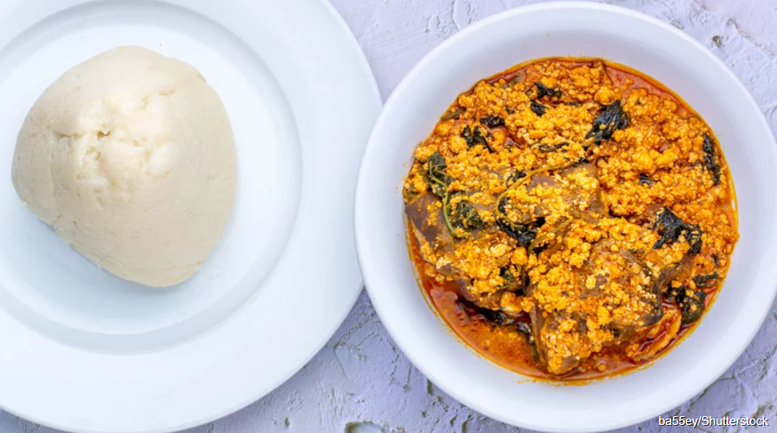
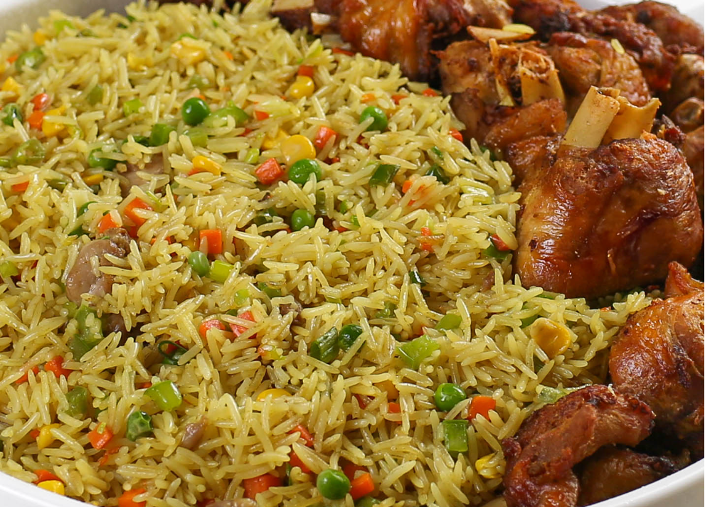
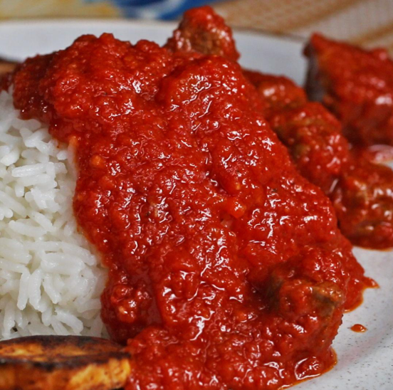

Indulge in authentic Nigerian dishes bursting with vibrant spices and unique flavors! From the
savory Jollof Rice to the mouthwatering Suya and the comforting Egusi Soup, every bite offers
a taste of Nigeria's rich culinary heritage. Savor the warmth, the tradition, and the soul of
our food—perfect for any occasion. Order now and enjoy a true taste of Naija!

Soups
Warm up with Naija Soul Food's traditional Nigerian soups like Egusi, Ogbono, and Efo
Riro, crafted with fresh, authentic ingredients. Served with your favorite swallow, these
comforting soups deliver the rich, soulful flavors of Nigeria in every bite!
arrow_forward

Rice Dishes
At Naija Soul Food, we bring you the vibrant and irresistible flavors of Nigeria with
our signature rice dishes, including the mouthwatering Jollof Rice and authentic Ofada
Rice. Each plate is a perfect blend of spices, tender meats, and savory goodness—sure
to leave you craving more!
arrow_forward

Stew and Sauces
Dive into the heart of Nigerian cuisine with our rich and flavorful stews and sauces,
from the deliciously spiced Tomato Stew to the zesty Pepper Sauce. Perfectly paired with
swallows, rice, or grilled meats, these dishes bring the true taste of Naija right to your plate!
arrow_forward
Protein
We serve a variety of mouthwatering proteins, including tender, juicy chicken, savory beef, succulent
goat meat, and perfectly seasoned turkey. Each dish is expertly prepared with rich spices and grilled
or slow-cooked to perfection, offering you an authentic Nigerian experience in every bite, whether
it’s a flavorful suya, peppered meat, or marinated roast!
arrow_forward